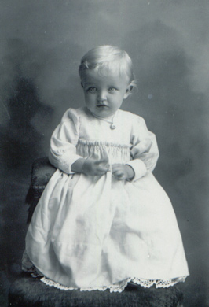
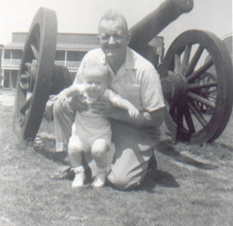
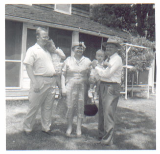
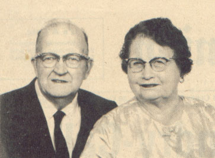

| Obert Almer Wogsland was the firstborn of Carl and Anne Wogsland, coming into the world on January 29th, 1902 in New Hope Town, WI. Obert's mother tongue was Norwegian, and he didn't learn English until he started attending Elementary school. |

|
|

in the summer of 1957. |
He Graduated from Wisconsin College in Scandinavia, WI in 1922. |
| On the 16th of February, 1927 he wed Alice Minerva Anderson in Nelsonville, WI. Together they had four children. |

|
|

|
Obert worked as a Mechanic for 15 years at Pfafflin Motors, retiring in 1968. Obert died 17 June 1980 at Fort Atkinson Memorial Hospital in Wisconsin and was buried in Evergreen Cemetery in Fort Atkinson, WI. |